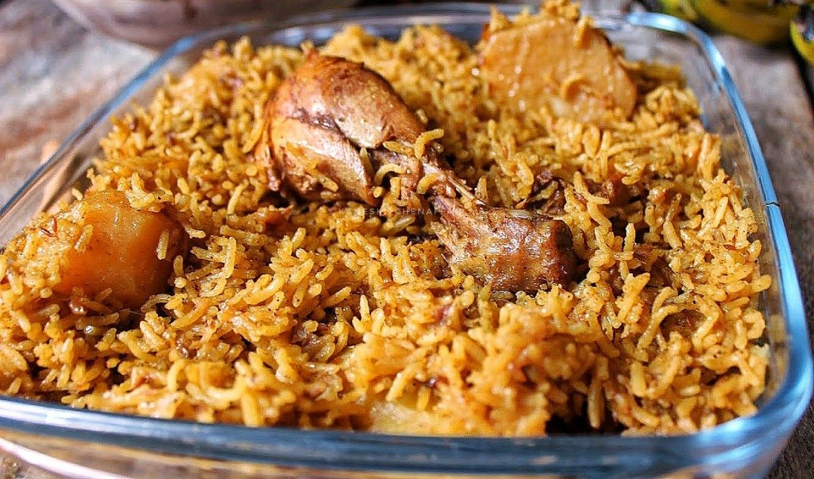

Chicken Pilau Recipe

Delicious Chicken Pilau
Chicken pilau is a delicious Kenyan styled spiced rice dish.In this dis, rice is cooked with
cinnamon, cloves, cumin, ginger, garlic and chicken. It is served with freshly chopped onions and tomatoes.
Ingridients
- 1/2 kg chicken
- 3-4 kg medium-sized onions
- 1/2 tablespoon of fresh ginger
- 2 cups of water
- 4 cups of water
- 5 small potatoes
- Fresh ground cinnamon
- Fresh ground cardamom
- Fresh ground cumin
- Bay leaves
- Salt
- 5 tablespoons of vegetable oil
- 2 tablespoons fo pilau masala mix
Steps
- Start by frying the chopped onions in the vegetable oil until the onions are soft and almost browned.
- Add in the ginger and garlic paste and let this cook for 2 minutes until they're fragrant.
- Add cinnamon, cardamon and cumin right after ginger and garlic.
- Add the chicken, season generously with salt, and cover.
- Allow the meat to cook until it dries up. The meat will let out its own juices and cook in them, and it will
eventually dry out and begin to brown.
- Once the meat browns and caramelizes, add in the potatoes. Mix them together and let the postatoes sip in the
oil and onion mix for a minute.
- After, add in the 3 tablespoons of pilau masala mix and bay leaves.
- Let the spices toast for a minute to let them bring out their best flavors.
- Add in the washed rice and stir the rice into the spices until the rice gets mixed into the spices.
- Finally, add in the 4 cups of water and let this begin to boil while stirring to make sure everything is well mixed
- Once it begins boiling, cover the sufuria with foil tightly and reduce the heat to the lowest heat.
- The rice will simmer on low heat for about 15-20 minutes until it dries out.
- Once the rice is dry, remove the foil and fluff the rice using a fork. Remove and discard the bay leaves.
- Use the fork to mix up the rice with any of the beef and onions that might have floated and settled at the top.
- Serve hot with some fresh kachumbari(salsa) and of course, a banana to go along with the spicy rice.